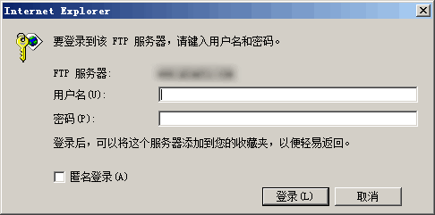
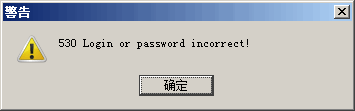
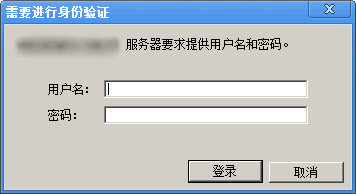
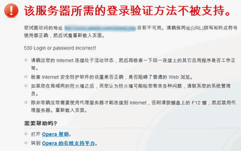

FTP 是一个 8 位的客户端-服务器协议，能操作任何类型的文件而不需要进一步处理，就像 MIME 或 Unicode 一样。但是，FTP 有着极高的延时，这意味着，从开始请求到第一次接收需求数据之间的时间，会非常长；并且不时的必须执行一些冗长的登录进程。 互联网工程工作小组 IETF在 RFC 0959 上定义了 FTP 协议的标准。
现在几乎所有的浏览器 (手持设备除外) 都能和FTP服务器创建连接。这使得在FTP上通过一个接口就可以操控远程文件，如同操控本地文件一样。这个功能通过给定一个 FTP 的 URL 实现，形如
ftp://<服务器地址>。是否提供密码是可选择的，如果有密码，则形如
ftp://<username>:<password>@<ftpserveraddress>。
直接使用 ftp://<服务器地址>
登录时，如果远程服务器需要验证用户才能进入，本地浏览器会打开提示窗口提示用户输入用户名及密码。如果，密验证没有通过，则会出现相应的提示信息。
同理，当使用 ftp://<username>:<password>@<ftpserveraddress>
方式登录开启用户验证的服务器时，一旦发生用户账户验证失败 (如账户过期以及用户名或密码不正确) 也会出现相应的提示信息。这个提示信息在各个浏览中处理不同。
不同浏览器对使用错误 <username>:<password> 登录后本地浏览器报错提示不同。
| 所有浏览器 |
|---|
| IE |  |
|---|---|
| Firefox |  |
| Chrome |  |
| Safari | |
| Opera |  |
直接在地址栏或链接内包含错误的用户名或密码的 FTP 地址：
以上是由用户点击进入 FTP 时的情况，实际环境中，当标记元素拥有 src 属性时，调用包含错误的用户名或密码的 FTP 地址内容时，各浏览器表现如下：
| IE6 IE7 IE8 | Firefox | Chrome | Safari | Opera | |
|---|---|---|---|---|---|
| IMG[src=FTP] | 不警告 | 警告 | 警告 | 不警告 | 不警告 |
| INPUT[type="image"][src=FTP] | 不警告 | 警告 | 警告 | 不警告 | 不警告 |
| IFRAME[src=FTP] | 警告 | 警告 | 警告 | 警告 | 警告 |
| EMBED[src=FTP] | 不警告 | 不警告 | 不警告 | 不警告 | 不警告 |
| SCRIPT[src=FTP] | 不警告 | 警告 | 警告 | 不警告 | 不警告 |
| Element {background:url(FTP)} | 不警告 | 警告 | 警告 | 不警告 | 不警告 |
由上表可知，IFRAME 标记 "src" 属性指向地址实际上等同于上例中的改变窗口页面地址，所有的浏览都会依据上例中出现不同的验证或错误提示。
【注】：由于暂时无法在当前服务器端搭建符合安全标准的 FTP ，本文不提供可直接使用的测试文件，用户如有兴趣验证文章内容，可尝试在本地搭建 FTP 环境实验。
当使用 ftp://<username>:<password>@<ftpserveraddress>
方式登录开启用户验证的服务器时，请务必确保用户账户在有效期内，并且保证用户名密码以及 FTP 服务器地址没有错误。
| 操作系统版本: | Windows 7 Ultimate build 7600 |
|---|---|
| 浏览器版本: |
IE6
IE7 IE8 Firefox 3.6.10 Chrome 8.0.552.0 dev Safari 5.0.2 Opera 10.63 |
| 测试页面: | |
| 本文更新时间: | 2010-10-14 |
FTP URL username password src 协议